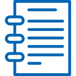
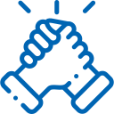

윤리 경영
깨끗한 조직문화와 윤리적인 기업활동은 지속가능경영의 필수조건입니다.
형식이나 체면이 아닌 내실 있는 윤리 실천을 함으로써 신뢰받고 존경받는 영속기업이 되겠습니다.
윤리 규범
윤리 규범
- 고객중시
- 최고의 제품/서비스
- 주주 존중
- 주주가치 극대화
- 협력사
- 상생가치 추구
- 회사
- 임직원 존중/공정 평가
- 사회 발전
- 자연 보호/자원 절약
- 임직원
- 상호 존중/합리적 보상
윤리 지침
임직원과 이해관계자를 비윤리의 위험으로부터 보호하고 윤리규범을 효율적으로 운영하기 위하여
주요 비윤리의 유형과 허용범위를 정하였습니다.
-
- 금품 수수
- 업무상 목적으로 이해관계자 또는 공무원 등에게 금품·접대·편의 제공시 청탁금지법령을 준수하여야 하며 그 윤리규범이 허용하는 범위를 준수하여 한다.
- 본인의 의지에 반하여 본 조 제 1항에서 금지하는 금품, 접대, 편의 등을 제공받은 경우에는 윤리 담당 조직에 신고하여야 한다
-
- 부당 지시
- 회사규정 또는 공정한 직무수행에 어긋나는 지시를 해서는 안 되며, 부하직원은 그 사유를 소명하고 지시이행을 거부할 수 있다.
- 본 조 제1항에 따라 지시를 이행하지 아니하였음에도 같은 지시가 반복될 때에는 즉시 윤리 담당 조직에 상담하도록 한다.
-
- 공정 경쟁
- 회사 내에서는 어떠한 형태의 정치 활동도 해서는 안 되며 회사의 조직, 인력, 재산을 정치적 목적으로 이용해서는 안 된다.
- 재직 중 업무관련 부정비리 또는 고의적인 해사행위를 하여 퇴사 후 중요한 연관성을 갖는 회사와는 거래계약을 하지 않는다.
-
- 부정 비리
- 해고, 사직 등 퇴직한 임직원 및 그가 경영상 중요한 연관성을 갖는 회사와는 거래계약을 하지 않는다.
- 당사의 계약업무 수행조직은 업체등록 및 거래계약 시 이를 확인할 책임이 있고 계약제한기간은 해고 또는 사직 처리된 날로부터 10년으로 한다
실천 활동
대우조선해양은 회사와 임직원 모두가 사회의 책임이 있는 일원으로서 생각하고
여러 방면으로 윤리 실천 활동을 하고 있습니다.
윤리교육

윤리경영에 대한 이해
비윤리 사례,성희롱예방
윤리의 날
매월 첫번째 목요일 '윤리의 날'
윤리경영 현업 자율실천활동 실시
교류·협력

윤리경영 업무 매뉴얼을 발간
자회사 윤리경영 도입을 지원
윤리상담
훈련된 전문 상담원이 있는 창구
전화·팩스·e-mail 등 다양한 방법